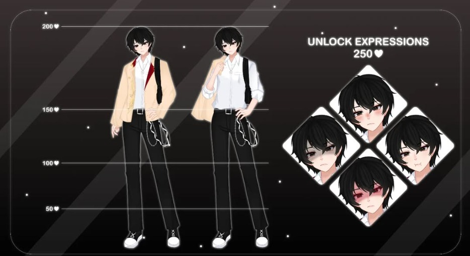

Nama: Kori Kazuhiko
Usia: (Tidak diketahui)
Pekerjaan: Penjaga Perpustakaan
Kekuatan: -
Kori memiliki sikap yang santai dan suka bercanda. Sering terlihat malas dan lebih suka bermalas-malasan daripada mengurus hal-hal serius. Menghindari hubungan sosial karena merasa itu terlalu merepotkan. Walau terlihat santai, ia tetap menyelesaikan pekerjaannya dengan baik tanpa terburu-buru.
Menghindari segala hal yang merepotkan, termasuk interaksi sosial, dan menjalani hidup dengan cara yang paling santai dan sederhana.
Penampilan pertama Kori Kazuhiko dalam mode santai.
Penampilan Kori saat memasuki mode akademi
Di antara halaman-halaman buku yang sunyi, ada lebih banyak yang tersembunyi daripada yang terlihat. Halo, aku Kori Kazuhiko, seorang petugas perpustakaan biasa… atau mungkin ada sesuatu yang lebih? Jika kamu mencari jawaban, kamu mungkin sudah terlalu dalam. Selamat datang, dan semoga rahasiamu tetap terjaga.
Cerita dimulai dengan tragedi yang menimpa keluarga Kazuhiko. Kori, sebagai saksi dari kehancuran keluarganya, kehilangan segala sesuatu yang ia cintai. Ini menciptakan latar belakang yang kelam dan emosional bagi Kori. Di sini, kita melihat Kori sebagai seorang anak yang tumbuh dengan rasa kehilangan dan kebencian terhadap sihir, yang menjadi penyebab kehancuran keluarganya. Alur ini mengarah pada pembentukan karakter Kori sebagai seseorang yang tertekan dan terluka, tetapi dengan potensi tersembunyi yang masih belum terbangkitkan.
Admin sedang malas bikin cerita